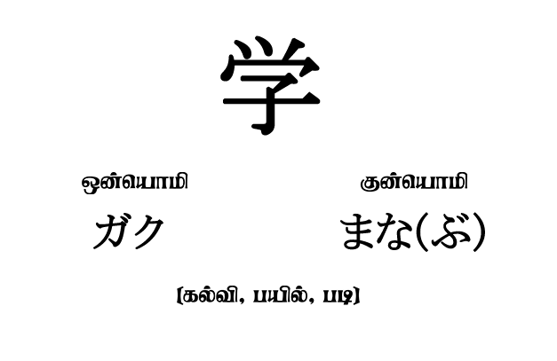
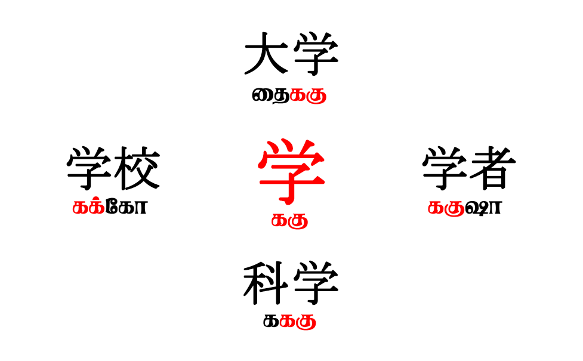
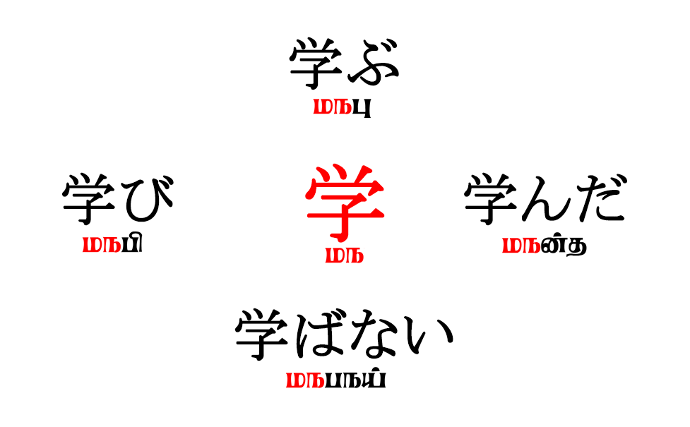

யப்பானிய மொழியின் தற்கால எழுத்தமைதி குறித்து முன்பொரு கட்டுரையில் பார்த்தாயாயிற்று. கான்ஜியும், ஹிரகநவும், கதகநவும் எவ்வாறு ஒருங்கே அமைந்து ஒரு கலப்பு எழுத்து வடிவமாக அதன் இன்றைய வரிவடிவம் இருக்கிறது என்பது குறித்தும் அதன் வரலாறு குறித்தும் பார்த்தோம். இப்போது இந்த கான்ஜியில் இருக்கும் சில சிக்கலான முடிச்சுகளை அவிழ்க்கும் நேரம்.
இக்கட்டுரையில், கான்ஜியை சற்று ஆழமாகப் புரிந்துகொள்ள முயற்சிக்கலாம். கூடவே ஒன்யோமி (onyomi) மற்றும் குன்யோமி (kunyomi) எனப்படும் உச்சரிப்புகள் குறித்தும், யப்பானிய மொழியின் கலைச்சொல் ஆக்கம் குறித்தும், வகொ (wago), கான்கொ (kango) மற்றும் கைரைகொ (gairaigo) எனப்படும் யப்பானியச் சொற்களின் வகைப்பாடு குறித்தும் விரிவாகப் பார்க்கலாம்.
கான்ஜியின் ஒன்யோமி மற்றும் குன்யோமி உச்சரிப்பு ஒலிகள்:
கான்ஜியின் உச்சரிப்பு ஒலிகளை இரண்டு பிரிவுகளாக பகுத்துள்ளனர், “ஒன்யொமி” மற்றும் “குன்யொமி” முறையே அவை.
- ஒன்யொமி (音読み) – சீன உச்சரிப்பிலிருந்து தருவிக்கப்பட்ட ஒலிகள்
- குன்யொமி (訓読み) – யப்பானிய மூலச்சொற்களின் ஒலிகள்
ஒரே கான்ஜி சித்திர வடிவமானது சீன மற்றும் யப்பானிய சொற்களின் உச்சரிப்பை பெற்றிருத்தல் எனச் சொல்வது இன்னும் புரியும் வண்ணம் இருக்கும். உதாரணமாக, “学” எனும் கான்ஜி சீன மொழியில் “ககு” என்றும், யப்பானிய மொழியில் “மந(பு)” என்றும் உச்சரிக்கப்படுவதைக் குறிக்கும். இரண்டுமே “கல்வி/பயில்/படி” எனும் பொருளைக் குறிக்கும். சரி, இந்த சீன கான்ஜி வரிவடிவத்தை எழுதி “மநபு” என்று யப்பானிய மொழியில் உச்சரித்தாலே “கல்வி“ என்று பொருள் வந்துவிடுமே பிறகு எங்கே இந்த “ககு” என்ற சீன உச்சரிப்பின் தேவை வருகிறது?

கலைச்சொல் ஆக்கம்
இங்குதான் “கலைச்சொல்” என்பதை புரிந்துகொள்ள வேண்டும். அதாவது ஒரு மொழிக்கு தேவையான புதிய சொற்கள் அந்த மொழியைப் பேசும் மக்களாலேயே சமைக்கப்படும். தொழில்நுட்பம், அரசியல், வணிகம், ஆன்மீகம், கலை, பண்பாடு ஆகியவற்றில் உண்டாகும் புதிய கருதுக்கோள்களை தம் மொழியில் எடுத்துரைக்க மொழி அறிஞர்களால் வேர்ச் சொர்க்களைக் கொண்டு அந்த மொழியிலேயே புதிய சொர்க்கள் படைக்கப்படும் அல்லது நவீனமயமாதல் காரணமாக துறைசார் கலைச்சொற்கள் வேற்றுமொழிச் சொற்களிலிருந்து அப்படியே மொழிபெயர்த்து பயன்படுத்தப்படும்.
இங்கு, யப்பானிய மொழியில் இயற்கை, சூழல், உறவு ஆகியவற்றை குறிக்கும் அடிப்படை பெயர், வினை மற்றும் உரிச் சொற்கள் பன்நெடுங்காலமாக இருந்தமையால் சீன கான்ஜி வரிவடிவத்தை மட்டும் எடுத்துக்கொண்டு சொந்த யப்பானிய உச்சரிப்பிலேயே ஒலிக்கப்பட்டன.
ஆனால் புதிய கலைச்சொற்கள் பெரும்பாலும் சீனாவிலிருந்து தருவிக்கப்பட்டன. ஆதலால் சீன உச்சரிப்பிலிருந்து தருவிக்கப்பட்ட ஒலிகளைக் கொண்டிருக்கும். முற்றிலுமாக சீனாவிலிருந்து தான் அனைத்து கலைச்சொற்களும் எடுத்துக்கொள்ளப்பட்டன எனச் சொல்ல இயலாது, புதிய கலைச்சொற்கள் பெரும்பாலும் சீன தொடர்பிலிருந்தும், சில சொந்தமாக யப்பானிய தேசத்திலும் படைக்கப்பட்டன என்று எடுத்து கொள்ளவேண்டும்.
உதாரணமாக, இதே “学” கான்ஜி உடன் இன்னொரு கான்ஜி சேர்ந்து வரும்போது அவை பெரும்பாலும் சீனாவிலிருந்து தருவிக்கப்பட்ட கலைச்சொற்களாக இருக்கக்கூடும். “大学” “学校” “学者” “科学” என்பன முறையே “தைககு” “கக்கோ” “ககுஷா” “கககு” என்ற உச்சரிப்புகளையும், “பல்கலைக்கழகம்” “பள்ளி” “அறிஞர்/ஆய்வுமாணவர்” ”அறிவியல்” என்ற பொருள்களையும் கொண்டுள்ளன.

இந்த “பல்கலைக்கழகம்” “பள்ளி” “அறிஞர்/ஆய்வுமாணவர்” ”அறிவியல்” ஆகிய சொற்கள்/கருதுகோள்கள் சீன தொடர்புக்கு முன் யப்பானிய மொழியில் இல்லாமல் இருந்திருக்கலாம் அல்லது ஒருவேளை முன்பே இருந்து பின் இந்த புதிய சீனச் சொற்களால் பதிலிடு செய்யப்பட்டிருக்கலாம்.
யப்பானிய மொழியும் தமிழ் போல் புணர்ச்சி விதிகளை கொண்டுள்ளமையால் இந்த “学校” எனும் சொல்லில் உள்ள ஒன்யொமிகள் “ககு+கோ” ஆனது “கக்கோ” என்று மாற்றமடைந்திருக்கிறது.
சரி, சில இடங்களில் “学” கான்ஜியின் குன்யொமியைக் குறிக்கையில் “மந(பு)” என்று பிரித்து எழுதும் காரணம் என்ன? தமிழின் மூலச்சொல் ஒன்றில் பல்வேறு விகுதிகள் சேர்ப்பதான் மூலம் வெவ்வேறு சொற்கள் உண்டாகும் அல்லவா? அதே போல இந்த “学” கான்ஜிக்கு “மந” எனும் மூல உச்சரிப்பைக் கொடுத்து பின் “பு” எனும் விகுதியை சேர்த்து நமக்கு இரண்டையும் பிரித்து தெளிவாகக் காட்டுகின்றனர். இந்த “மந” எனும் மூல உச்சரிப்பில் பல்வேறு விகுதிகளை இணைத்து வெவ்வேறு சொற்கள் உண்டாகும்.

உதாரணமாக “கல்/கற்” எனும் மூல உச்சரிப்பிலிருந்து “கற்க” “கற்றல்” “கற்றது” “கற்கவில்லை” என்ற சொற்கள் உண்டாவது போல, “மந” எனும் மூல உச்சரிப்பிலிருந்து “மநபு” “மநபி” “மநன்த” “மநபநய்” போன்ற சொற்களும் உண்டாகின்றன. இங்கு மூல உச்சரிப்பான “மந” வை “学” எனும் கான்ஜி கொண்டும் இதற விகுதி ஒலிகளை ஹிரகந எழுத்து கொண்டும் எழுதுகின்றனர் (学ぶ). இந்த கான்ஜி+ஹிரகந கூட்டு எழுத்து முறை “ஒகுரிகந” என்றழைக்கப்படிக்குறது.
சரி, “மநபு” எனும் யப்பானிய உச்சரிப்பை “まな(ぷ)” என்று ஹிரகநவிலும் “ககு” எனும் சீனவழி தருவிக்கப்பட்ட உச்சரிப்பை “ガク” என்று கதகநவிலும் எழுதுவதன் காரணம் என்ன? “மநபு” என்பது ஒரு மூல யப்பானியச்சொல் மற்றும் “கல்வி” எனும் பொருள் கொண்டுள்ளாமையால் அது “ஹிரகந” கொண்டு எழுதப்படுகிறது, மாறாக “ககு” என்பது சீன உச்சரிப்பிலிருந்து தருவிக்கப்பட்ட ஒரு ஒலி, பொதுவாக இது ஒன்றுக்கும் மேற்பட்ட கான்ஜிக்களுடன் சேந்துதான் ஒரு கூட்டுக்கான்ஜி கலைச்சொல்லாக பாவிக்கப்படுகிறது. தனித்து உச்சரிக்கும் போது பொருள் கொள்ளாதமையாளும், அந்நிய (சீன) மொழியிலிருந்து தருவிக்கப்பட்டமையாளும் இது “கதகந” கொண்டு எழுதப்படுகிறது.
ஒரு யப்பானியச்சொல் ஒரு கான்ஜி வரிவடிவத்தை கொண்டிருக்கும்போது பெரும்பாலும் யப்பானிய மூலச்சொல் ஒலிகளையும், இரண்டு அல்லது அதற்கு மேற்பட்ட கூட்டுக் கான்ஜி வரிவடிவத்தைக் கொண்டிருக்கும்போது பெரும்பாலும் சீன உச்சரிப்பிலிருந்து தருவிக்கப்பட்ட ஒலிகளையும் பெரும். இதில் விதிவிலக்குகள் சிலவும் உள்ளன, குன்யொமி இன்றி ஒன்யொமியை மட்டுமே கொண்ட கான்ஜிக்கள் உண்டு, போலவே ஒன்யொமி அற்ற குன்யொமியை மட்டுமே கொண்ட கான்ஜிக்களும் உண்டு. மேலும் கூட்டு கான்ஜி சொற்களில் ஒன்று ஒன்யொமியையும் இன்னொன்று குன்யொமியையும் கொண்டு கலவை உச்சரிப்பு ஒலிகளுடனும் திகழ்வதும் உண்டு.
இவ்வளவு ஏன், ஏற்கனவே உள்ள கான்ஜி வரிவடிவத்திற்குள் பொறுத்த முடியாத சில சிறப்பான யப்பானியச் சொற்களுக்கு யப்பானியர்களே புதிய கான்ஜி வரிவடிவங்களை வரைந்து உருவாக்கியும் உள்ளனர், இவை “கொகுஜி”( 国字) அல்லது “நாட்டுஎழுத்து” என்றழைக்கப்படுகின்றன.
| கொகுஜி கான்ஜி | பொருள் | உச்சரிப்பு |
|---|---|---|
| 畑 | கழனி | はたけ |
| 姫 | இளவரசி | ひめ |
| 匂い | வாசனை | におい |
| 峠 | மலைப்பாதை | とうげ |
| 枠 | சட்டம் | わく |
| 咲く | மலர்தல் | さく |
இன்னுமொரு விசயம் மனதில் கொள்ள வேண்டும், ஒரு கான்ஜிக்கு ஒன்றுக்கும் மேற்ப்பட்ட ஒன்யொமியோ அல்லது ஒன்றுக்கும் மேற்ப்பட்ட குன்யொமியோ இருக்கலாம். “ஒரு பொருள் பன்மொழி” என்பது எல்லா மொழிக்கும் பொருந்தும் தானே, எனவே அவற்றை போகிறபோக்கில் கற்றுக்கொள்ள வேண்டும்.
யப்பானிய மொழிச்சொற்கள்; ஒரு பார்வை:
இப்போது உச்சரிப்புகள் குறித்த ஒரு பரந்துபட்ட பார்வை கிடைத்திருக்கும் என்று நினைக்கிறேன். யப்பானிய மொழியின் மொத்த சொற்களை மூன்றாக பகுத்துள்ளனர், அவை முறையே வகொ (wago), கான்கொ (kango) மற்றும் கைரைகொ (gairaigo) ஆகும்.
- வகொ (和語) – யப்பானிய மொழிச்சொற்கள்
- கான்கொ (漢語) – சீனமொழிலிலிருந்து தருவிக்கப்பட்டச் சொற்கள்
- கைரைகொ (外来語) – சீனம் தவிர்த்த அந்நிய மொழியிலிருந்து வந்தச் சொற்கள்
வகொ:
வகொ (wago) அல்லது “யமதொ-கொதொப” என்பது பழைய யப்பானிய மொழியிலிருந்து இன்றுவரை புழக்கத்தில் உள்ள சொற்களை குறிக்கும், யப்பானிய மொழி முன்பு “யமதொ-கொ” என்றழைக்கப்பட்டது, “யமதொ” எனும் இடப்பெயர் யப்பான் மொத்தத்தையும் குறிப்பதாக அக்காலத்தில் இருந்துள்ளது. சீன மொழியின் தாக்கம் இல்லாத இந்தச்சொற்கள் யப்பானிய மொழிக்கே உரித்தான ஒலி அமைப்பையும் பண்பாட்டு கூறுகளையும் தன்னகத்தே கொண்டவை.
சீனா உடனான கலாச்சார-ஆன்மீக பரிமாற்றங்களுக்கு முன் யப்பானியர்கள் பயிரிடுவதையும், மீன் பிடித்தலையும் முதன்மை தொழிலாக கொண்டிருந்தனர் என்பது இந்த யப்பானிய மொழிச்சொற்களின் மூலம் தெரிய வருகிறது. அந்த அளவுக்கு இயற்கை/சூழல் சார்ந்த சொற்களையும் பொருட்சுவை கொண்ட சொற்களையும் கொண்டிருந்தது. தமிழ் மொழியானது, மழையின் தன்மையை வைத்து அதற்கு 14 வெவ்வேறு பெரியர்களை கொண்டுள்ளது என்பர், போலவே யப்பானிய மொழியும் 6 முதல் 7 பெயர்களைக் கொண்டிருந்ததாகத் தெரிகிறது, தமிழ் மொழி போலவே யப்பானிய மொழியும் ஒரு சூழலியல் மொழியாக இருந்திருக்கிறது என்பதற்கு இதுவும் ஒரு சான்று. காலப்போக்கில் பல்வேறு தனித்துவமான, பொருள் ஆழம் கொண்ட சொற்கள் சீன மொழி தாக்கத்தால் மறைந்து போயுள்ளன.
கான்கொ:
“கான்” என்பது “ஹான்” எனும் சீனச்சொல்லின் திரிபு, “ஹான்” என்பது ஒரு சீனப் பேரரசைக் குறிக்கும், கான்ஜியும், கான்கொவும் இதிலிருந்து வந்தவையே. யப்பானிய மொழியில் சீன மொழியின் தாக்கம் தவிர்க்க முடியாத ஒன்றாக ஆகியபடியாலும் அளவுக்கதிகமான சீன மொழியிலிருந்து தருவிக்கப்பட்ட சொற்களை கொண்டுள்ளாமையாலும் இவற்றிற்க்கென்று தனியே இந்த கான்கொ (kango) எனப்படும் வகைப்பாடே உள்ளது. கி.பி. முதலாம் நூற்றாண்டு காலத்திலேயே சீன மொழிச் சொற்கள் கொரிய அறிஞர்கள் வழியே யப்பானை அடைந்தது என்பர், கிட்டதட்ட இரண்டாயிரம் ஆண்டுகளாகவே சீன மொழிச் சொற்கள் யப்பானில் புழக்கத்தில் இருப்பதால் அவை யப்பானிய மொழியின் ஒரு அங்கமாகவே மாறியுள்ளன. ஒரு வகையில் மலையாள மொழியில் உள்ள ஸம்ஸ்க்ருத மொழிச் சொற்கள் போல இவை எனலாம், அந்த அளவுக்கு ஒன்றிப்போய் உள்ளது.
இன்றைக்கு புழக்கத்தில் இருக்கும் மொத்த யப்பானியச் சொற்களில் கிட்டத்தட்ட 50% இந்த சீன மொழி வழி வந்த சொற்கள் என அடையாளம் காணப்படுகிறது. கான்ஜிக்களின் சீன உச்சரிப்புகளை வைத்து உள்நாட்டிலேயே சமைக்கப்பட்ட கலைச்சொற்களும் இவற்றுள் அடங்கும் எனலாம், இவை “வசெய்- கான்கொ” (wasei-kango) என்றழைக்கப்படுகின்றன. கான்கொ என்றாலே பல்வேறு துறைசார் கலைச்சொற்கள் என்று அறியப்படும் அளவிற்கு இவை முக்கியத்துவம் கொண்டவை.
கைரைகொ:
சீனம் தவிர்த்த இதர நாடுகளிலிருந்து கடன் பெற்றுக்கொள்ளப்பட்ட சொற்கள் பொதுவாக கைரைகொ (gairaigo) என்றழைக்கப்படுகின்றன. போர்ச்சுகீசிய, டச்சு, ஜெர்மானிய, ஆங்கில மொழிலிருந்து ஆரம்ப காலத்தில் சொற்கள் பெற்றுக்கொள்ளப்பட்டன. இச்சொற்கள் “கதகந” வரிவடிவத்தில் எழுதப்படுகின்றன. அந்நியர்களான நம் பெயர்கள் அல்லது நம் பொருட்களின் பெயர்கள் என அனைத்தும் கதகநவிலேயே எழுதப்படவேண்டும் என்பது எழுதப்பட்ட விதி.
ஆரம்ப காலத்தில் இப்படி குறிப்பிட்ட மொழிகளிலிருந்து மட்டும் வணிக உறவால் சொற்கள் பெறப்பட்டாலும் இரண்டாம் உலகப்பொருக்குப் பிறகு ஆங்கில மொழியின் தாக்கம் தான் அதிகம் எனலாம். ஓரளவு ஆங்கிலம் எழுதப்படிக்க தெரியும் என்றால் இப்போதே உங்களுக்கு 10% யப்பானியச் சொற்கள் தெரியும் எனலாம், அந்த அளவுக்கு ஆங்கிலத்தின் தாக்கம் இன்று யப்பானிய மொழியில் உள்ளது. என்றாலும் இச்சொற்கள் யப்பானிய ஒலிகளுக்கு ஏற்றாற்போல் மாற்றியமைப்பட்டே பயன்படுத்தப்படுகின்றன, அதில் அவர்களுக்கு தாழ்வு மனப்பான்மை ஏதும் இல்லை. என்றாலும் இது குழந்தைகளின் ஆங்கில மொழிக்கற்றலை சற்று தொய்வாக்குகிறது என்று சில கல்வியியலாளர்கள் கருதுகிறார்கள்.
சுருக்கம்:
இவ்வாறாக வகொ, கான்கொ, கைரைகொ என்ற வகைப்பட்டின் இருத்தல் இந்த மொழிக்கு ஒரு தனித்துவ அடையாளத்தை தருகிறது. என்னதான் சீன மொழியின் தாக்கம் அதிகமாக இருந்தாலும் ஒரு சொல்லை பார்த்த மாட்டிலேயே யப்பணியர்களால் அது யப்பானியச்சொல்லா? சீன மொழி வழி தருவிக்கப்பட்ட சொல்லா? அல்லது வேறு ஏதேனும் அந்நிய மொழிச்சொல்லா என அதன் வரிவடிவம் அல்லது உச்சரிப்பு கொண்டு இனம் கண்டுகொள்ள முடியும். இது காலத்திருக்கும் இம்மொழிக்கென்று தனித்த அடையாளத்தையும், இம்மொழி கற்பவர்களுக்கு ஒரு சிறப்பு ஆற்றலையும் தருகிறது என்றால் மிகையாகாது.